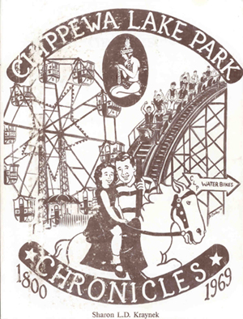
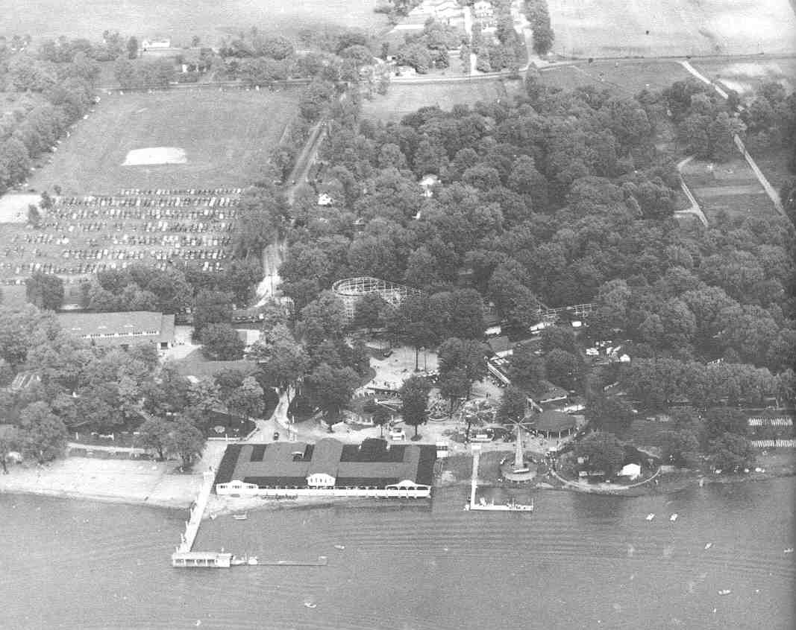

| Books about Chippewa Lake Park |
|
Chippewa Lake Amusement Park; In the Beginning, Volume 1
by Sharon L.D. Kraynek A new book from Sharon. Details to follow including how to get this book. Stay tuned! |
|  |
Chippewa Lake Park Chronicles
by Sharon L.D. Kraynek Chippewa Lake Park Chronicles, 1800 - 1969 documents the life of Chippewa Lake Park, through the use of newspaper reports, from before its birth, until the sale of the park by Parker Beach to Continental Business Enterprises. This book gives great insight to the history of the park, as well as the happenings of the time, and how they shaped the life of Chippewa Lake Park. The book has great pictures of the park, and classic advertisements. This book can be oredered exclusively from Borders Books for a ver low price. This book is well worth the money and time! A special thanks to Sharon, who did extensive research and hard work on the book that has helped me to understand Chippewa. This book can also be found at the Medina Library, and possibly other libraries in your area. |
|
This is just one of the many great photographs of the park that Sharon provides in here book. This arial view shows a good portion of the park including the ballroom of the far ledt middle, the coaster, the hotel on the shore (gone now), and many other rides. There are many great photos like this one, but you'll have to get the book to see them!
There are other books by Sharon that I haven't yet had time to put up here. Borders Books may list them if you search on Sharon's name. Again, they are the exclusive distributer, besides Sharon of course, of the books. Barnes and Nobooks won't have them. If you have any questions or information about this Book, please email me at admin@illicitohio.com. |
 |
{kind=link}